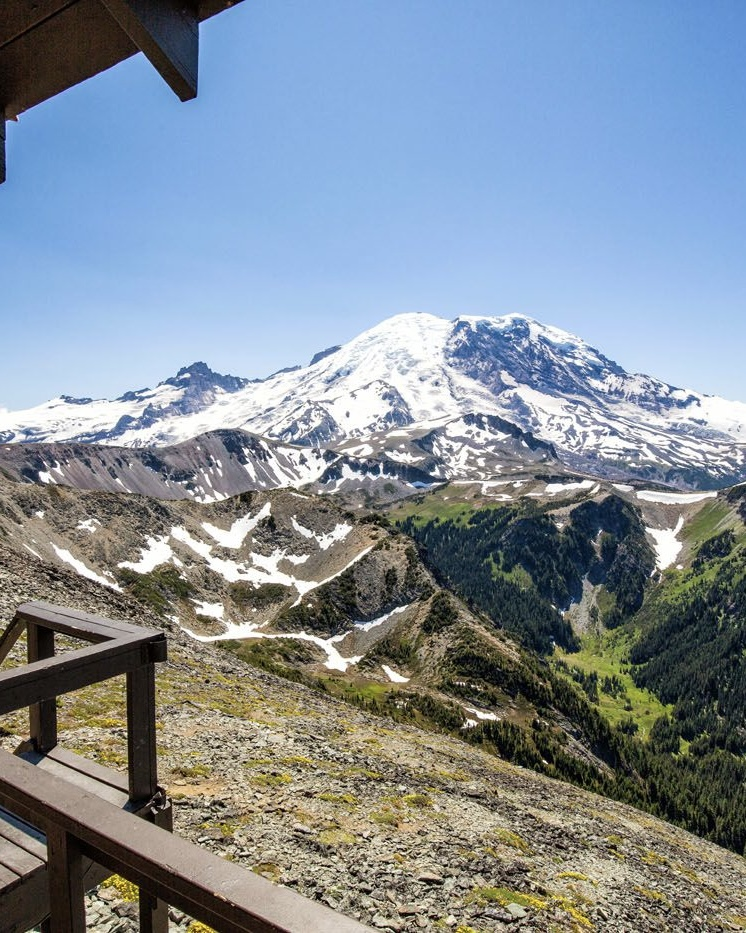

Fremont Lookout
Mount Rainier National Park
Elevation Gain: 1,100 feet (335m)
Length: 5.7 miles, roundtrip
Average time: 2hr 50min
Elevation Gain: 1,100 feet (335m)
Length: 5.7 miles, roundtrip
Average time: 2hr 50min

Elevation Gain: 2,020 feet (615m)
Length: 7.2 miles, roundtrip
Average time: 4hr 10min
Elevation Gain: 2,100 feet (640m)
Length: 7.6 miles, roundtrip
Average time: 4hr 25min